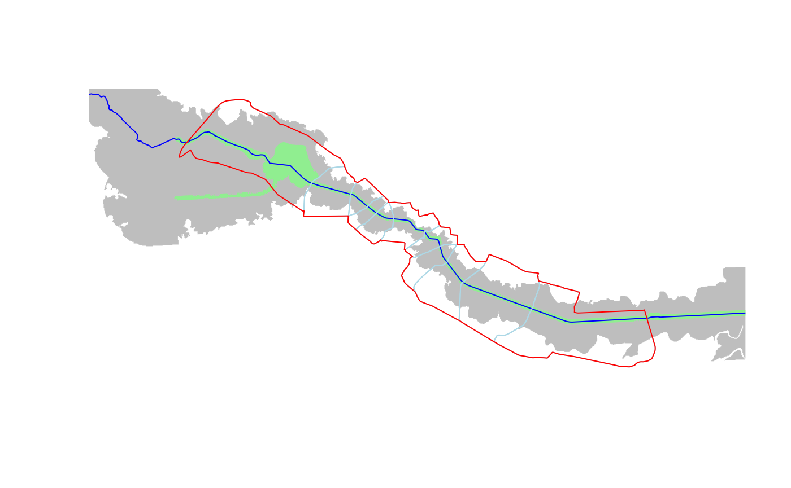

5. Corridor delineation
Source:vignettes/vig_05-corridor-delineation.Rmd
vig_05-corridor-delineation.Rmd
library(rcrisp)
library(sf)
bucharest_osm <- get_osm_example_data()
bucharest_dem <- get_dem_example_data()In this notebook we explore how to delineate an urban river corridor using river Dâmbovița in Bucharest, Romania. We will use OpenStreetMap (OSM) data, first from the Overpass API and then from a local file.
city_name <- "Bucharest"
river_name <- "Dâmbovița"We start by demonstrating the use of the all-in-one
delineate() function which does the following three
steps:
Fetches city boundary, street and rail network, as well as river centreline and surface data from the Overpass API as shown in
vignette("getting-osm-data");Pre-processes the street and rail network for delineation as shown in
vignette("network-preparation")Constructs the initial corridor based on the chosen method. With the default
method = "valley", the Cost Distance Accumulation algorithm is used to delineate the corridor based on the digital elevation model (DEM) of the area retrieved from the Earth Search API. If themethod = "buffer"is chosen instead, the corridor is constructed by buffering the river centreline and surface data with a given buffer distance.Delineates the corridor based on the pre-processed network and initial corridor. Optionally, the corridor is split into segments based on the network and the river space is delineated.
The delineate() function carries out the above steps in
one and returns a list that by default contains the following output
elements: corridor, segments, and
riverspace.
bucharest_dambovita <- delineate(
city_name,
river_name,
segments = TRUE,
riverspace = TRUE
)
#> The default `network_buffer` of 3000 m is used for corridor delineation.
#> The default `buildings_buffer` of 100 m is used for riverspace delineation.
#> Saving data to cache directory: /home/runner/.cache/R/rcrisp/osmdata_building__25.965_44.393_26.227_44.468.rds
#> Saving data to cache directory: /home/runner/.cache/R/rcrisp/dem_Copernicus_DSM_COG_10_N44_00_E026_00_DEM_Copernicus_DSM_COG_10_N44_00_E025_00_DEM_25.898_44.344_26.295_44.517.rds
#> Calculating viewpoints from both river edge and river centerline.
# Plot all layers within the extent of the delineated corridor
bbox <- st_bbox(bucharest_dambovita$corridor)
plot(bucharest_dambovita$valley, col = "grey", border = NA,
xlim = c(bbox["xmin"], bbox["xmax"]), ylim = c(bbox["ymin"], bbox["ymax"]))
plot(bucharest_dambovita$riverspace, col = "lightgreen", border = NA,
add = TRUE)
plot(bucharest_osm$river_centerline, col = "blue", add = TRUE)
plot(bucharest_dambovita$segments, border = "lightblue", add = TRUE)
plot(bucharest_dambovita$corridor, border = "red", wt = 2, add = TRUE)